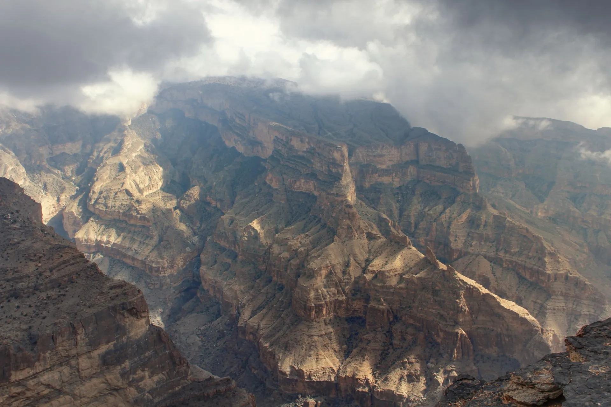

Désert et montagnes : 8 jours à Oman
Du patrimoine de montagne à une nuit sous les étoiles du désert.

8 jours / 7 nuits · À partir de 3 100 $ par personne, en chambre double, hors vols · Hôtels : Kempinski Hotel Muscat, Golden Tulip Nizwa, Alila Jabal Akhdar et Desert Nights Camp
Jour 1 : arrivée à Mascate
Transfert de l'aéroport au Kempinski Hotel Muscat et première soirée détendue.
Jour 2 : Mascate
La Grande Mosquée, la corniche et le souk de Mutrah, le vieux Mascate. Détails dans notre guide de Mascate.
Jour 3 : patrimoine de Nizwa
Route vers l'intérieur : fort et souk de Nizwa, château de Jabreen, fort de Bahla et fabrique de halwa omanais. Nuit au Golden Tulip Nizwa.
Jour 4 : montée au Jabal Akhdar
Ascension de la Montagne Verte d'Oman (la route au-delà du poste de contrôle est réservée aux 4x4) et nuit à l'Alila Jabal Akhdar. Voir notre guide du Jabal Akhdar.
Jour 5 : Jabal Akhdar, puis le désert
Matinée en montagne, puis direction le Wahiba Sands pour une nuit au Desert Nights Camp : dunes au coucher du soleil et ciel étoilé.
Jour 6 : dunes au lever du soleil, retour à Mascate
Lever du soleil dans les dunes, puis retour vers Mascate, environ deux à trois heures de route depuis la lisière du désert.
Jour 7 : croisière dauphins
Croisière matinale à la recherche des dauphins, avec du temps pour le snorkeling. L'après-midi est libre.
Jour 8 : départ
Transfert à l'aéroport pour votre vol retour.
Ce programme est donné à titre indicatif. Nous adaptons l'ordre, le rythme et les hôtels à vos vols, à la saison et à vos envies, et nous confirmons les disponibilités dans votre devis.
Réponses rapides
Faut-il un 4x4 ?
Oui, pour le Jabal Akhdar au-delà du poste de contrôle et pour les dunes du Wahiba Sands. Le chauffeur et le véhicule font partie de l'organisation du voyage.
Comment est le camp dans le désert ?
Les camps vont du simple au confortable. Lisez notre guide du Wahiba Sands pour savoir quoi vérifier avant de réserver.
Quelle est la meilleure saison ?
D'octobre à avril environ. Le désert et la montagne sont bien plus agréables pendant les mois frais, voir meilleure période pour visiter Oman.
Pages associées
Envie de montagnes et de dunes ?
Dites-nous quand vous partez et nous construirons cet itinéraire autour de vous.
Demandez votre devis gratuit →